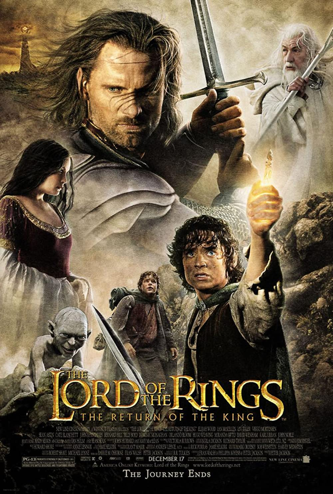
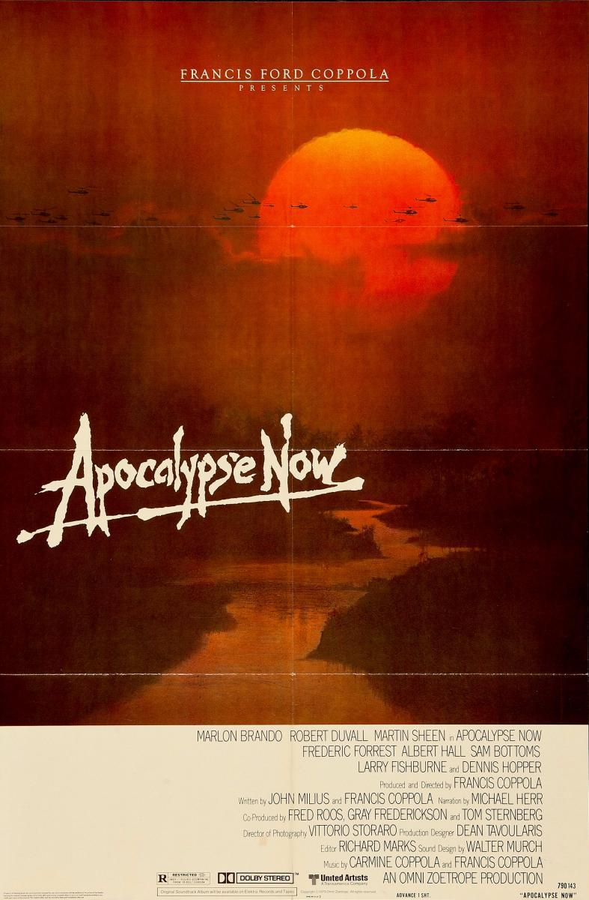
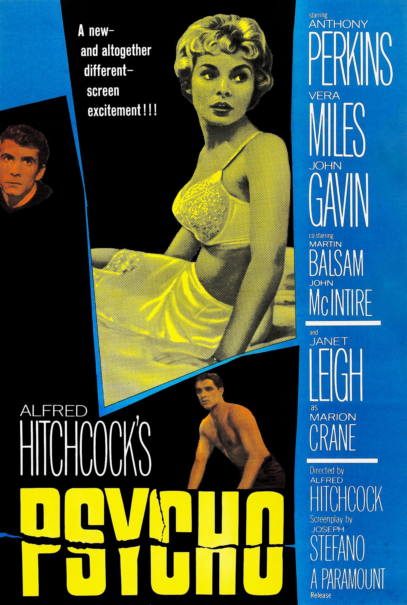
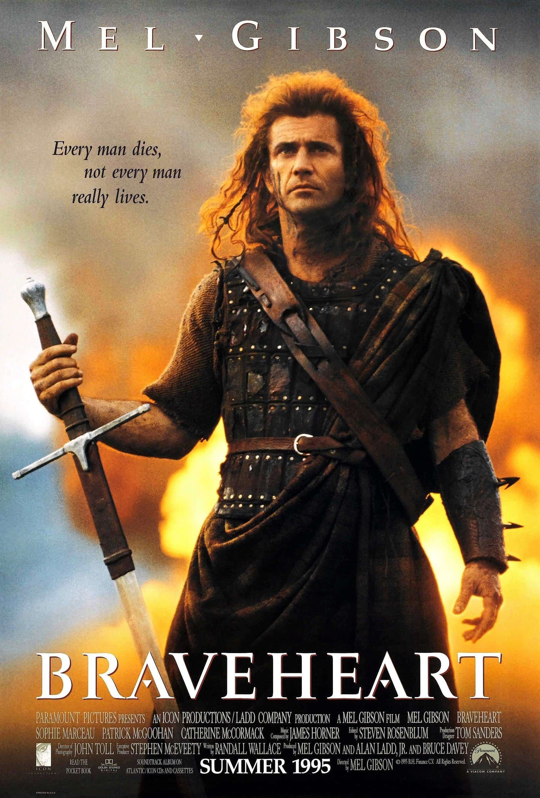
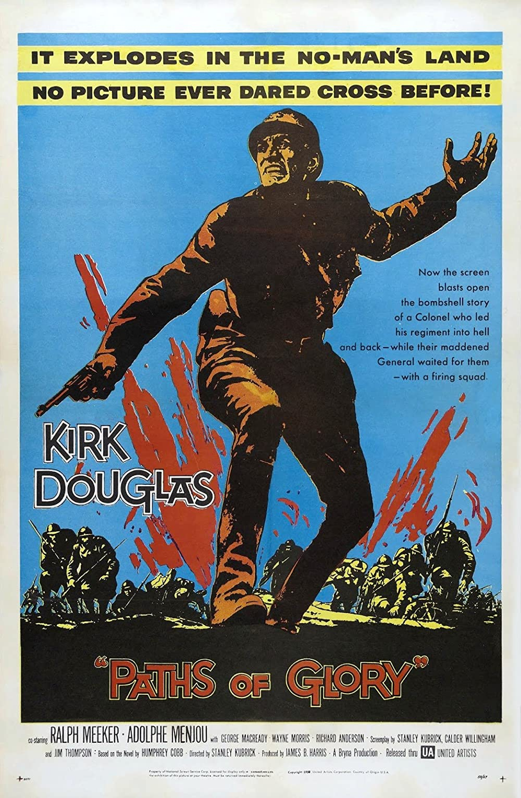
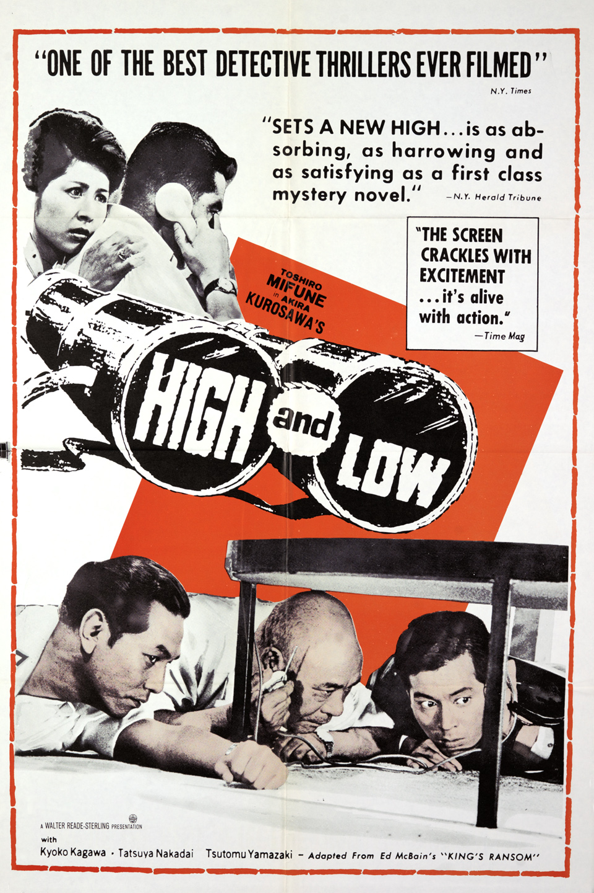
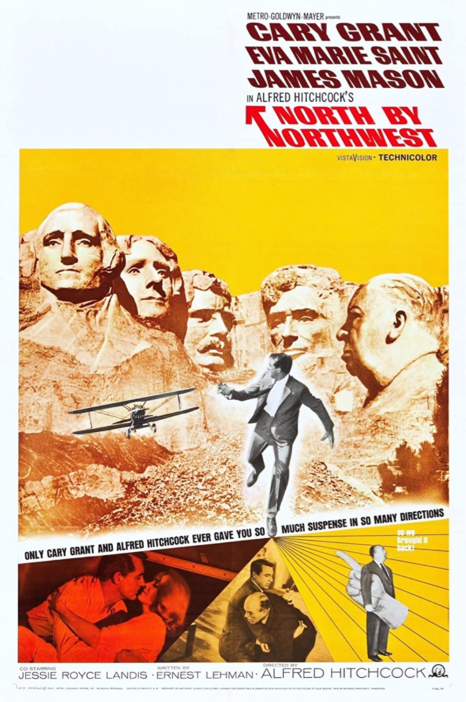

1. Втеча з Шоушенка(1994)

2. Хрещений батько(1972)

3. Темний лицар (2008)

4. Список Шиндлера (1993)
5. Володар перснів: Повернення короля (2003)

6. Хрещений батько 2 (1974)
7. 12 розгніваних чоловіків (1957)

8. Кримінальне чтиво (1994)

9. Володар перснів: Хранителі персня (2001)

10. Початок (2010)

11. Бійцівський клуб (1999)

12. Форрест Ґамп (1994)

13. Володар перснів: Дві вежі (2002)

14. Хороший, поганий, злий (1966)

15. Славні хлопці (1990)

16. Матриця (1999)
17. Пролітаючи над гніздом зозулі (1975)
18. Зоряні війни: Епізод 5 - Імперія завдає удару у відповідь (1980)

19. Інтерстеллар (2014)
20. Мовчання ягнят (1991)
21. Сім (1995)

22. Зелена миля (1999)

23. Врятувати рядового Раяна (1998)
24. Зоряні війни (1977)

25. Термінатор 2: Судний день (1991)

26. Віднесені привидами (2001)

27. Місто Бога (2002)

28. Життя прекрасне (1997)
29. Це дивовижне життя (1946)
30. Сім самураїв (1954)
31. Харакірі (1962)

32. Одержимість (2014)

33. Паразити (2019)

34. Назад у майбутнє (1985)

35. Гладіатор (2000)
36. Відступники (2006)

37. Престиж (2006)
38. Апокаліпсис наших днів (1979)

39. Леон (1994)

40. Чужий (1979)
41. Підозрілі особи (1995)

42. Король лев (1994)

43. Американська історія Ікс (1998)
44. Піаніст (2002)

45. Недоторканні (2011)
46. Одного разу на Дикому Заході (1968)

47. Касабланка (1942)
48. Психо (1960)
49. Могила світлячків (1988)
50. Новий кінотеатр «Парадізо» (1988)

51. Вікно у двір (1954)
52. Нові часи (1936)
53. Вогні великого міста (1931)

54. Месники: Завершення (2019)

55. Джокер (I) (2019)

56. Людина-павук: Навколо всесвіту (2018)

57. Месники: Війна нескінченності (2018)
58. Краса по-американськи (1999)
59. Джанго вільний (2012)
60. Індіана Джонс: У пошуках втраченого ковчега
61. Олдбой (2003)

62. Темний лицар повертається (2012)

63. Мементо (2000)

64. Сяйво (1980)
65. Хоробре серце (1995)
66. Чужинці (1986)
67. Іди i дивись (1985)
68. Амадей (1984)

69. Коко (I) (2017)

70. Твоє ім'я (2016)

71. Три ідіоти (2009)

72. ВОЛЛ-I (2008)

73. Життя інших (2006)
74. Капернаум (2018)

75. Принцеса Мононоке (1997)

76. Доктор Стрейнджлав, або Як я перестав хвилюватись i полюбив бомбу (1964)
77. Підводний човен (1981)

78. Бульвар Сансет (1950)
79. Шляхи слави (1957)
80. Свідок обвинувачення (1957)
81. Великий диктатор (1940)
82. Рай i пекло (1963)

83. Розумник Вілл Хантінг (1997)
84. Безславні виродки (2009)
85. Реквієм за мрією (2000)

86. Вічне сяйво чистого розуму (2004)

87. Скажені пси (1992)

88. 2001: Космічна Одіссея (1968)

89. Полювання (2012)

90. Історія іграшок (1995)

91. Зоряні війни: Епізод 6 - Повернення Джедая (1983)
92. Якось в Америці (1984)
93. Лоуренс Аравійський (1962)
94. Історія іграшок 3 (2010)

95. Громадянин Кейн (1941)
96. Запаморочення (1958)
97. Співаючи під дощем (1952)
98. На північ через північний захід (1959)
99. М: Місто шукає вбивцю (1931)
100. Жити (1952)